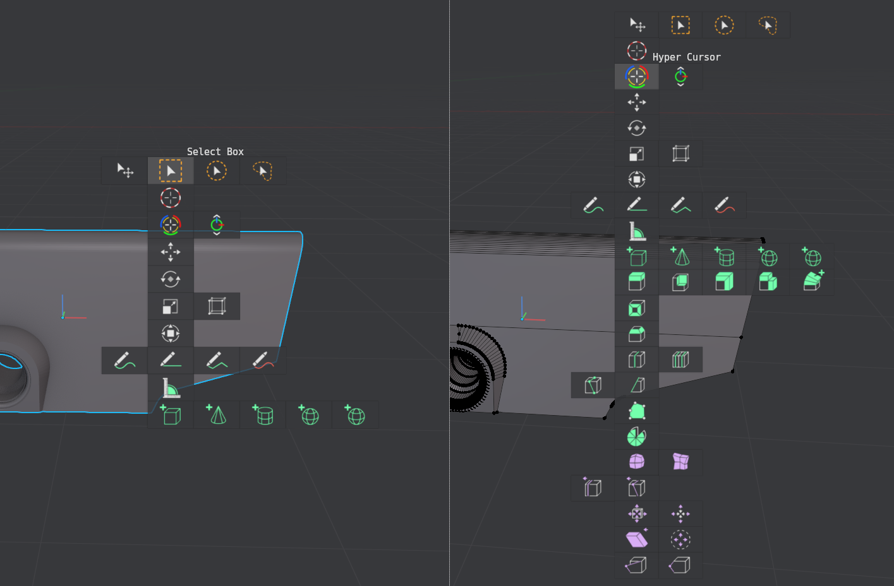

Tools Pie
shortcut Q
The Tools Pie's main purpose is to allow using some addon-supplied tools, while keeping the 3D View's toolbar collapsed and out of the way.
These addons are HardOps, BoxCutter and HyperCursor.in pre-release on patreon
Other than these, I prefer not using most tools at all, and use the Select Box tool as the default, which the pie also by default supports switching to via the top button.
the Tools pie with the select tool disabled and HardOps, BoxCutter and HyperCursor registered
the Tools pie with everything enabled in the addon preferences
Preferences
You can optionally show the Quick Favorites, Tool Bar and Surface Draw tool, previously in the Modes pie
{kind=link}
Tools Switcher and Tools Picker
The Top button in the Tools pie by default switches between the Select Box and Move tools. This behavior of the "Tool Switcher" is fully adjustable in the addon prefs and allows switching or cycling between any tools you want.
 Customize the tools to switch/cycle between, or make the Top Button invoke the Tools Picker instead
Customize the tools to switch/cycle between, or make the Top Button invoke the Tools Picker instead
ALT clicking on the Top button will by default invoke the modal Tool Picker, which provides quick access to any tool right under the mouse.
This avoids having to go to or reveal the tools bar if you prefer to keep it hidden.
It's also superior to the native Tools popup menu, because it actually reveals all tools, and allows direct switching to any sub tool in a group of tools.
 the new modal Tools Picker in object- and edit-mesh-modes
{kind=link}
The Tool Picker is mapped to SHIFT + Q by default, but that keymap is disabled by default and needs to be enabled, to avoid conflicts with other addons.
Alternatively, the Top button itself be be set up to invoke the Tool Picker, without the need for the ALT mod key, thereby replacing the Tool Switcher,
Annotation tools
With one of the Annotation tools active, the tool exposes some Surface Placement options.
In addition, there is a convenient tool to toggle Annotation visibility across all layers.

This visibility toggle will take into account manually hidden annotation layers, and will only re-enable those, that have been previously visible too.
Note tool
MACHIN3tools 1.11 introduced the Note tool, which allows you to easily add text notes anywhere on your model - useful if you don't work with a tablet, or dislike writing by hand. Textual notes are not only useful for yourself - as little reminders or ideas with spacial context - but also when working collaboratively of course.
Note
The tool works a bit differently in Blender 4.2 vs 4.3, as demonstrated in the video above.
In 4.2 it is fully annotation based, and so notes only exist on annotation layers, not as scene objects.
In 4.3, this is no longer possible, and I had to resort to creating Grease Pencil objects, that hold the notes.
benefits
- parented to objects
- easily transform notes afterwards
disadvantages
- clutters scene with GP objects
- in SOLID Single shading has solid color, not annotation color; may require multiply blend mode to be legible
- has minimum stroke thickness hard cap, limiting use of small notes
With an active Grease Pencil object in draw mode, the Tools pie now exposes the Brush, Line and Erase tools, as well as quick access to the object's Grease Pencil layers and tint color in other modes.
 Tools pie in GreasePencil draw mode
Tools pie in GreasePencil draw mode
The ToggleAnnotations tool in Blender 4.3 supports toggling layers of Grease Pencil Note objects in 4.3 too now - in addition to regular annotations, thereby creating a consistent 4.2-like experience, and avoiding having to micro-manage Grease Pencil objects.
{kind=link}
Surface Draw tool
Note
Previously - and in the video below - the tool was exposed in the Modes Pie, but has been moved to the Tools pie since, where it's a better fit among the Annotation tools.
The tool is used to draw Grease Pencil lines on the surface of objects.
Not only is this useful for DECALmachine's GPanel tool, it's also a great design tool akin to tape drawing.